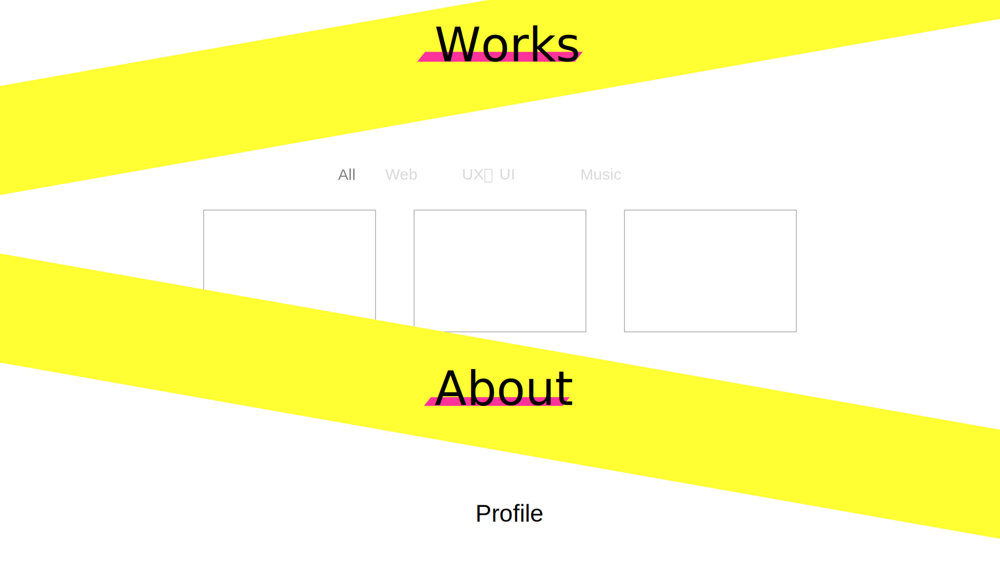
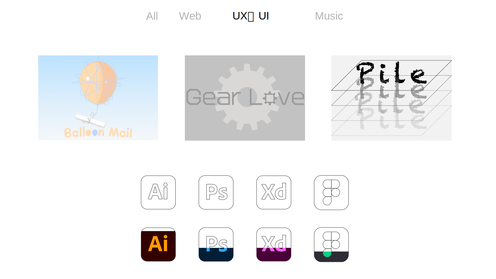

TERAZAWA MIZUKI Portfolio
以前制作したポートフォリオサイトです。
概要
インターンシップや就職活動に向けて製作したポートフォリオサイトです。
本サイトはこのサイトをベースにブラッシュアップしてリニューアルしたものです。
デザインからコーディングまでを全て1人で行いました。
制作期間
2020年5月〜7月
使用技術
HTML5 / CSS3 / Sass / Javascript / jQuery /
illustrator / Photoshop
制作背景・コンセプト
このサイトを見ていただく企業の方は多くの学生のポートフォリオを見るため、目を引くファーストビュー・見やすくてシンプルをコンセプトに製作しました。
また部分的にアニメーションをつけることで、視覚的に伝えたいことが伝わるように工夫をしました。
デザイン・工夫点
ファーストビューでは印象付けるために、各セクションでは区切りをはっきりさせるために彩度の高い蛍光色とアニメーションを使用しました。


技術的に工夫した点は、自身のスキル度合いをアイコンとアニメーションを用いて直感的にわかりやすくした点です。 そして作品のカテゴリを選択するとフィルタが適用される部分です。